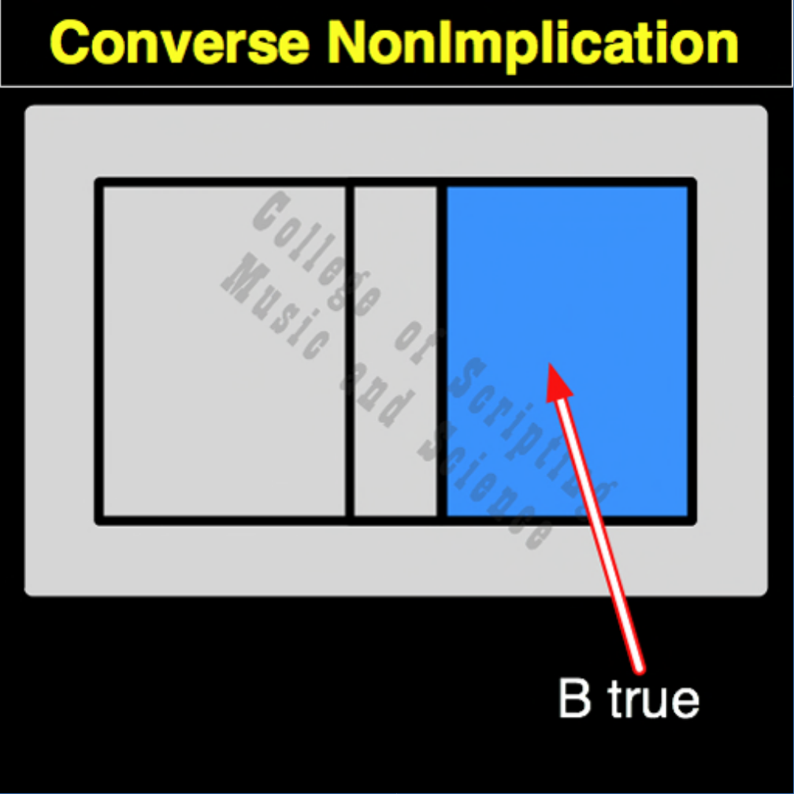

| CNI | |
|---|---|
| 0 + 0 | = 0 |
| 0 + 1 | = 1 |
| 1 + 0 | = 0 |
| 1 + 1 | = 0 |

In the ethical architecture of Starfleet, Converse Non-Implication (CNI) is the mathematical manifestation of pure autonomy, the moment of graduation. The system only outputs a true success (1) when the individual (Input B) acts with initiative and succeeds (1) completely independent of direct Authority or Assistance (Input A = 0). If the Captain is holding their hand and doing the work alongside them (1,1), true independence has not been proven (0). If the cadet does nothing (0,0), independence is absent (0). This gate isolates and celebrates the exact moment a Starfleet officer learns to stand entirely on their own, transforming from a follower into a sovereign leader.
| CNI Gate FLIPPED to make CI Gate | |
|---|---|
| 0 + 0 = 0 | FLIPPED becomes 1 |
| 0 + 1 = 1 | FLIPPED becomes 0 |
| 1 + 0 = 0 | FLIPPED becomes 1 |
| 1 + 1 = 0 | FLIPPED becomes 1 |
CNI is the OPPOSITE of CI.
CNI RETURNS TRUE (1) ONLY WHEN THE EFFECT (B) IS TRUE AND THE CAUSE (A) IS FALSE.
Because the inputs are directional, CNI is not its own mirror. Its MIRROR and its REVERSE are both MNI (Material Non-Implication).
// gateCni.js
function gateCni(a, b)
{
// Autonomy (1) is proven ONLY when the Cadet acts (B=1) without Command Assistance (A=0).
if (a == 0 && b == 1)
{
// Pure initiative achieved (Graduation / Independence)
return 1;
}
else
{
// Independence not yet proven
return 0;
}
}
//----//
/*
CNI
0100
A B
0 0 = 0
0 1 = 1
1 0 = 0
1 1 = 0
Opposite: CI
*/